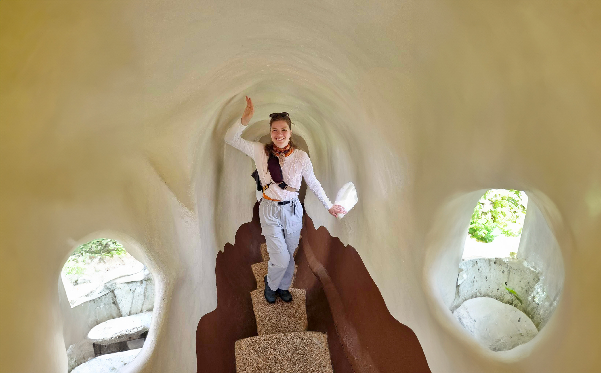
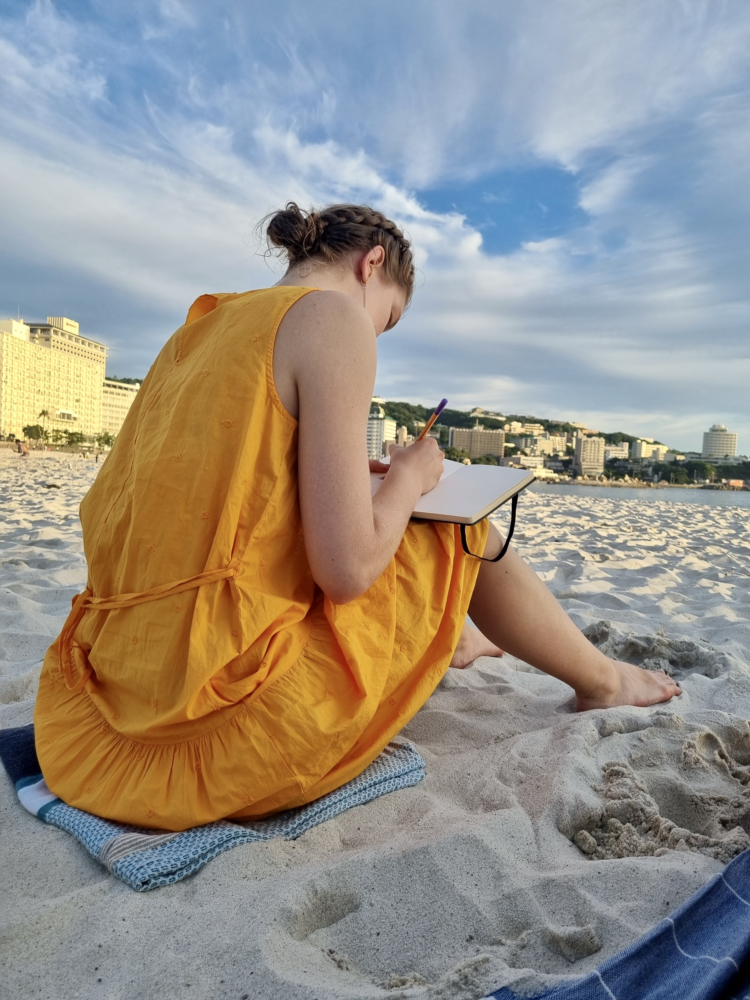
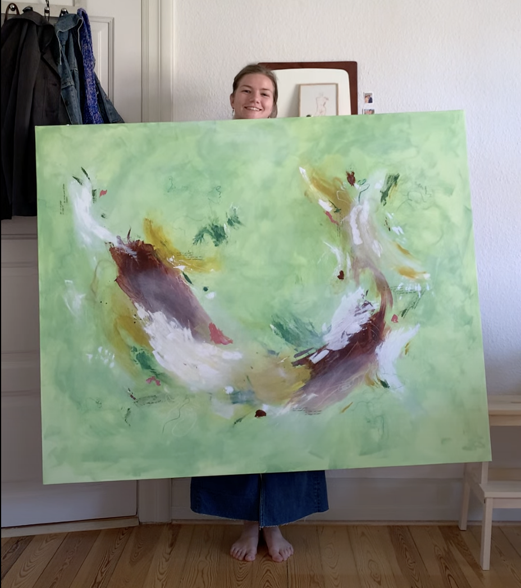

Bag om
Mit navn er Stine, og jeg står bag Penspiration. Jeg er født i
år 2000, kommer fra det midtjyske og bor nu i Århus,
hvor jeg læser Multimediedesigner.
Jeg har altid haft en stor passion for at udtrykke mig
kreativt, både med pensel og blyant, og har gennem
årene været stærkt optaget af mennesket som motiv,
men er i de seneste år også blevet betaget af det mere abstrakte.


Penspiration er skabt for at inspirere andre og dele glæden ved at tegne. Jeg tror på, at alle kan finde deres egen unikke måde at skabe kunst på, og jeg håber, at mine værker og kreative processer kan give dig lyst til at udforske din egen kreativitet.